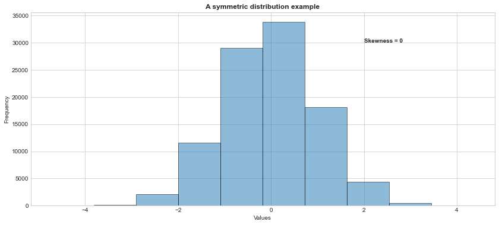
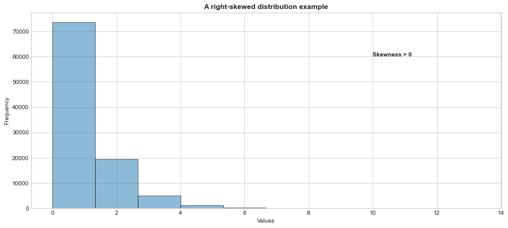
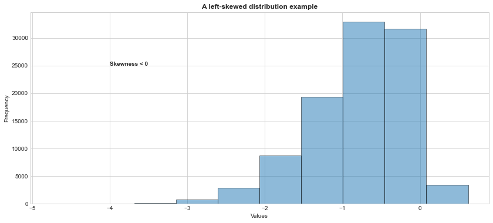

import warnings
warnings.filterwarnings('ignore')Lab 01
Warm-up: Exploratory Data Analysis
What is data?
- The term data refers to the observations gathered on the characteristics of interest.
- For example,
- A medical doctor may collect family history of a patient for a medical study,
- Market research companies may collect demographic characteristics of people who voted for political candidates in a particular election, or
- A quality control engineer may collect operating data from an industrial manufacturing process.
- Each data point roots from a physical, demographical or behavioral phenomenon.
Data representation
- The data is generally organized and represented in a rectangular array of observed values, where
- Each row refers to the observations for a particular object (e.g., patients in a medical study), and
- Each column refers to the observations for a particular characteristic (attribute) (e.g., age of the patients, gender of the patients etc.) recorded for each row.
- Many statistical software/library requires a similar data structure (e.g., tabular data, tidy data) which is stored in a plain text file or spreadsheet file for data analysis.
Example
Consider the College.csv file which contains a number of variables for 777 different universites and colleges in the U.S.:
Private: Public/private indicator
Apps: Number of applications received
Accept: Number of applicants acceptedEnroll: Number of new students enrolledTop10perc: New students from top 10% of high school classTop25perc: New students from top 25% of high school classF.Undergrad: Number of full-time undergraduatesP.Undergrad: Number of part-time undergraduatesOutstate: Out-of-state tuitionRoom.Board: Room and board costsBooks: Estimated book costsPersonal: Estimated personal spendingPhD: Percent of faculty with Ph.D.’sTerminal: Percent of faculty with terminal degreeS.F.Ratio: Student/faculty ratioperc.alumni: Percent of alumni who donateExpend: Instructional expenditure per studentGrad.Rate: Graduation rate
#download the .csv file into your local and import it into your current
#Jupyter Notebook session
#i use a relative path, but make sure that you set your own path correctly
#the data set involves both column and row names
import pandas as pd
college_df = pd.read_csv("datasets/College.csv", index_col = 0)#print the first 5 rows of the data
#each row refers to a college
#each column refers to an attribute for the colleges
college_df.head()| Private | Apps | Accept | Enroll | Top10perc | Top25perc | F.Undergrad | P.Undergrad | Outstate | Room.Board | Books | Personal | PhD | Terminal | S.F.Ratio | perc.alumni | Expend | Grad.Rate | |
|---|---|---|---|---|---|---|---|---|---|---|---|---|---|---|---|---|---|---|
| Abilene Christian University | Yes | 1660 | 1232 | 721 | 23 | 52 | 2885 | 537 | 7440 | 3300 | 450 | 2200 | 70 | 78 | 18.1 | 12 | 7041 | 60 |
| Adelphi University | Yes | 2186 | 1924 | 512 | 16 | 29 | 2683 | 1227 | 12280 | 6450 | 750 | 1500 | 29 | 30 | 12.2 | 16 | 10527 | 56 |
| Adrian College | Yes | 1428 | 1097 | 336 | 22 | 50 | 1036 | 99 | 11250 | 3750 | 400 | 1165 | 53 | 66 | 12.9 | 30 | 8735 | 54 |
| Agnes Scott College | Yes | 417 | 349 | 137 | 60 | 89 | 510 | 63 | 12960 | 5450 | 450 | 875 | 92 | 97 | 7.7 | 37 | 19016 | 59 |
| Alaska Pacific University | Yes | 193 | 146 | 55 | 16 | 44 | 249 | 869 | 7560 | 4120 | 800 | 1500 | 76 | 72 | 11.9 | 2 | 10922 | 15 |
#returns the column labels of the df
college_df.columnsIndex(['Private', 'Apps', 'Accept', 'Enroll', 'Top10perc', 'Top25perc',
'F.Undergrad', 'P.Undergrad', 'Outstate', 'Room.Board', 'Books',
'Personal', 'PhD', 'Terminal', 'S.F.Ratio', 'perc.alumni', 'Expend',
'Grad.Rate'],
dtype='object')#returns a tuple with number of rows and columns
college_df.shape(777, 18)#Note that this is a data frame
type(college_df)pandas.core.frame.DataFrameNote that with the increasing variety of data that can be recorded electronically, not all data files have this traditional two-dimesional array format. For example, in medical records, some observations for some subjects may be images (e.g., dental x-rays, brain scans), hand-written prescriptions or a continuous streaming data over time such as monitoring the patient’s heart-rate, respiratory rate etc.
Variables
- A variable is a characteristic that can vary in value in objects of a data.
Quantitative variables
- A variable is called quantitative when the measurement scale has numerical values that represent different magnitudes of the variable.
- Examples of quantitative variables are number of good friends, annual income, college GPA, age, and weight.
- A quantitative variable is discrete if it can take a set of distinct, separate values, such as the non-negative integers (0,1,2,3, …).
- Examples of discrete variables are one’s number of good friends, number of computers in household,and number of days playing a sport in the past week.
- A quantitative variable is continuous if it can take an infinite continuum of possible real number values.
- Examples of continuous variables are height, weight, age, distance a person walks in a day, winning time in a marathon race, and how long a cell phone works before it needs recharging.
Categorical variables
- A variable is called categorical when the measurement scale is a set of categories.
- Examples of categorical variables are marital status (with categories such as single, married, divorced, widowed), primary mode of transportation to work (automobile, bicycle, bus, sub- way, walk), preferred destination for clothes shopping (downtown, Internet, mall, other), and favorite type of music (classical, country, folk, jazz, rap/hip-hop, rock).
- Categorical variables are often called qualitative.
- Categorical variables having only two categories, such as whether employed (yes, no), are called binary.
- Categorical variables have two types of measurement scales.
- For some categorical variables, the categories are unordered. The categories are then said to form a nominal scale.
- By contrast, some categorical scales have a natural ordering of values. The categories form an ordinal scale.
- Examples are perceived happiness (not too happy, pretty happy, very happy), headache pain (none, slight, moderate, severe), and political philosophy (very liberal, slightly liberal, moderate, slightly conservative, very conservative).
#print the data types of columns
college_df.dtypesPrivate object
Apps int64
Accept int64
Enroll int64
Top10perc int64
Top25perc int64
F.Undergrad int64
P.Undergrad int64
Outstate int64
Room.Board int64
Books int64
Personal int64
PhD int64
Terminal int64
S.F.Ratio float64
perc.alumni int64
Expend int64
Grad.Rate int64
dtype: object#private atrribute is a binary variable
college_df['Private'].unique()array(['Yes', 'No'], dtype=object)#books is a discrete variable
college_df['Books'].unique()array([ 450, 750, 400, 800, 500, 300, 660, 600, 650, 550, 900,
96, 350, 700, 540, 1000, 355, 630, 475, 1495, 2000, 410,
560, 860, 720, 425, 612, 480, 525, 526, 570, 2340, 654,
666, 380, 470, 680, 595, 520, 625, 530, 120, 490, 330,
580, 670, 795, 531, 465, 537, 640, 634, 920, 508, 528,
225, 618, 545, 575, 725, 375, 504, 1100, 200, 250, 850,
620, 759, 558, 515, 420, 616, 512, 436, 598, 554, 675,
610, 370, 1230, 955, 690, 569, 1200, 221, 576, 430, 385,
275, 711, 708, 1125, 635, 468, 518, 636, 790, 556, 687,
494, 476, 753, 714, 765, 495, 452, 1300, 646, 858, 541,
376, 535, 740, 585, 768, 1400, 110, 498, 639, 678, 605,
617])#get a general summary of the data
college_df.info()<class 'pandas.core.frame.DataFrame'>
Index: 777 entries, Abilene Christian University to York College of Pennsylvania
Data columns (total 18 columns):
# Column Non-Null Count Dtype
--- ------ -------------- -----
0 Private 777 non-null object
1 Apps 777 non-null int64
2 Accept 777 non-null int64
3 Enroll 777 non-null int64
4 Top10perc 777 non-null int64
5 Top25perc 777 non-null int64
6 F.Undergrad 777 non-null int64
7 P.Undergrad 777 non-null int64
8 Outstate 777 non-null int64
9 Room.Board 777 non-null int64
10 Books 777 non-null int64
11 Personal 777 non-null int64
12 PhD 777 non-null int64
13 Terminal 777 non-null int64
14 S.F.Ratio 777 non-null float64
15 perc.alumni 777 non-null int64
16 Expend 777 non-null int64
17 Grad.Rate 777 non-null int64
dtypes: float64(1), int64(16), object(1)
memory usage: 115.3+ KBWhy do we analyze data?
- To understand what has happened or what is happening,
- To predict what is likely to happen, either in the future or in other circumstances we have not seen or observed yet,
- To guide us in making decisions.
How to exploring a new data set?
- Assess the general characteristics of the data set, e.g.,
- How many subjects/objects do we have? How many variables?
- What are the variable names? Are they meaningful? Are the names compatible with the software syntax we are goint to use?
- What type is each variable - e.g., numeric (discrete or continuous), categorical?
- How many unique values does each variable, especially categorical ones, have? (Very important to know before data splitting).
- Are there any missing observations?
#we already checked most of them, but let's check
#whether any missing values
#college_df.isnull(): alias of isna()
college_df.isna().sum() Private 0
Apps 0
Accept 0
Enroll 0
Top10perc 0
Top25perc 0
F.Undergrad 0
P.Undergrad 0
Outstate 0
Room.Board 0
Books 0
Personal 0
PhD 0
Terminal 0
S.F.Ratio 0
perc.alumni 0
Expend 0
Grad.Rate 0
dtype: int64- Examine descriptive statistics for each variable.
- Descriptive statistics are numbers computed from the data that present a summary of the variables.
Measures of Location
- The most common measures of location are the Mean, the Median, the Mode, and the Quartiles.
- Mean: the arithmetic average of all the observations. The mean equals the sum of all observations divided by the sample size.
- Median: the middle-most value of the ranked set of observations so that half the observations are greater than the median and the other half is less. Median is a robust measure of central tendency
- Note that the mean is very sensitive to outliers (extreme or unusual observations) whereas the median is not.
- Mode: the most frequently occurring value in the data set. This makes more sense when attributes are not continuous.
- Quartiles: division points which split data into four equal parts after rank-ordering them.
- Division points are called Q1 (the first quartile), Q2 (the second quartile or median), and Q3 (the third quartile)
- Similarly, Deciles and Percentiles are defined as division points that divide the rank-ordered data into 10 and 100 equal segments.
#get the mean values of numeric columns only
#by default skipna=True
college_df.mean(numeric_only = True)Apps 3001.638353
Accept 2018.804376
Enroll 779.972973
Top10perc 27.558559
Top25perc 55.796654
F.Undergrad 3699.907336
P.Undergrad 855.298584
Outstate 10440.669241
Room.Board 4357.526384
Books 549.380952
Personal 1340.642214
PhD 72.660232
Terminal 79.702703
S.F.Ratio 14.089704
perc.alumni 22.743887
Expend 9660.171171
Grad.Rate 65.463320
dtype: float64#get the median values of numeric columns only
college_df.median(numeric_only = True)Apps 1558.0
Accept 1110.0
Enroll 434.0
Top10perc 23.0
Top25perc 54.0
F.Undergrad 1707.0
P.Undergrad 353.0
Outstate 9990.0
Room.Board 4200.0
Books 500.0
Personal 1200.0
PhD 75.0
Terminal 82.0
S.F.Ratio 13.6
perc.alumni 21.0
Expend 8377.0
Grad.Rate 65.0
dtype: float64college_df['S.F.Ratio'].mode()0 12.1
dtype: float64college_df['Private'].mode()0 Yes
dtype: object#get the frequency of each category of Private variable
college_df['Private'].value_counts()Yes 565
No 212
Name: Private, dtype: int64Measures of Spread
- Measures of location are not enough to capture all aspects of the variables.
- Measures of dispersion are necessary to understand the variability of the data.
- The most common measure of dispersion is the Variance, the Standard Deviation, the Interquartile Range and Range.
- Variance: measures how far data values lie from the mean. It is defined as the average of the squared differences between the mean and the individual data values.
- Standard Deviation: is the square root of the variance. It is defined as the average distance between the mean and the individual data values.
- Interquartile range (IQR): is the difference between Q3 and Q1. IQR contains the middle 50% of data.
- Range is the difference between the maximum and minimum values in the sample.
#get the variance values of numeric columns only
#by default skipna=True
college_df.var(numeric_only = True)Apps 1.497846e+07
Accept 6.007960e+06
Enroll 8.633684e+05
Top10perc 3.111825e+02
Top25perc 3.922292e+02
F.Undergrad 2.352658e+07
P.Undergrad 2.317799e+06
Outstate 1.618466e+07
Room.Board 1.202743e+06
Books 2.725978e+04
Personal 4.584258e+05
PhD 2.666086e+02
Terminal 2.167478e+02
S.F.Ratio 1.566853e+01
perc.alumni 1.535567e+02
Expend 2.726687e+07
Grad.Rate 2.950737e+02
dtype: float64#get the std values of numeric columns only
#by default skipna=True
college_df.std(numeric_only = True)Apps 3870.201484
Accept 2451.113971
Enroll 929.176190
Top10perc 17.640364
Top25perc 19.804778
F.Undergrad 4850.420531
P.Undergrad 1522.431887
Outstate 4023.016484
Room.Board 1096.696416
Books 165.105360
Personal 677.071454
PhD 16.328155
Terminal 14.722359
S.F.Ratio 3.958349
perc.alumni 12.391801
Expend 5221.768440
Grad.Rate 17.177710
dtype: float64#or get a full summary for each variable
#you need to manually calculate IQR=Q3-Q1
college_df.describe().round(2)| Apps | Accept | Enroll | Top10perc | Top25perc | F.Undergrad | P.Undergrad | Outstate | Room.Board | Books | Personal | PhD | Terminal | S.F.Ratio | perc.alumni | Expend | Grad.Rate | |
|---|---|---|---|---|---|---|---|---|---|---|---|---|---|---|---|---|---|
| count | 777.00 | 777.00 | 777.00 | 777.00 | 777.0 | 777.00 | 777.00 | 777.00 | 777.00 | 777.00 | 777.00 | 777.00 | 777.00 | 777.00 | 777.00 | 777.00 | 777.00 |
| mean | 3001.64 | 2018.80 | 779.97 | 27.56 | 55.8 | 3699.91 | 855.30 | 10440.67 | 4357.53 | 549.38 | 1340.64 | 72.66 | 79.70 | 14.09 | 22.74 | 9660.17 | 65.46 |
| std | 3870.20 | 2451.11 | 929.18 | 17.64 | 19.8 | 4850.42 | 1522.43 | 4023.02 | 1096.70 | 165.11 | 677.07 | 16.33 | 14.72 | 3.96 | 12.39 | 5221.77 | 17.18 |
| min | 81.00 | 72.00 | 35.00 | 1.00 | 9.0 | 139.00 | 1.00 | 2340.00 | 1780.00 | 96.00 | 250.00 | 8.00 | 24.00 | 2.50 | 0.00 | 3186.00 | 10.00 |
| 25% | 776.00 | 604.00 | 242.00 | 15.00 | 41.0 | 992.00 | 95.00 | 7320.00 | 3597.00 | 470.00 | 850.00 | 62.00 | 71.00 | 11.50 | 13.00 | 6751.00 | 53.00 |
| 50% | 1558.00 | 1110.00 | 434.00 | 23.00 | 54.0 | 1707.00 | 353.00 | 9990.00 | 4200.00 | 500.00 | 1200.00 | 75.00 | 82.00 | 13.60 | 21.00 | 8377.00 | 65.00 |
| 75% | 3624.00 | 2424.00 | 902.00 | 35.00 | 69.0 | 4005.00 | 967.00 | 12925.00 | 5050.00 | 600.00 | 1700.00 | 85.00 | 92.00 | 16.50 | 31.00 | 10830.00 | 78.00 |
| max | 48094.00 | 26330.00 | 6392.00 | 96.00 | 100.0 | 31643.00 | 21836.00 | 21700.00 | 8124.00 | 2340.00 | 6800.00 | 103.00 | 100.00 | 39.80 | 64.00 | 56233.00 | 118.00 |
Measures of Skewness
In addition to the measures of location and dispersion, the arrangement of data or the shape of the data distribution is also of considerable interest.
The most ‘well-behaved’ distribution is a symmetric distribution where the mean and the median are coincident.
The symmetry is lost if there exists a tail in either direction.
Skewness measures whether or not a distribution has a single long tail.
The sample skewness is measured as:
\[ \frac{\sqrt{n}\sum_{i}^{n}(x_i-\bar{x})^3}{\big(\sum_{i}^{n}(x_i-\bar{x})^2\big)^\frac{3}{2}}. \]
import numpy as np
import scipy.stats as stats
import matplotlib.pyplot as plt
#generate large number of random variables from standard normal dist.
#returns a numpy array
x = stats.norm.rvs(loc = 0, scale = 1, size = 100000, random_state = 1773)
#get a histogram of the data
plt.hist(x, alpha = 0.5, edgecolor = 'black')
plt.title('A symmetric distribution example', weight = "bold")
plt.ylabel('Frequency')
plt.xlabel('Values')
plt.text(2, 30000, 'Skewness = 0', weight = "bold")
plt.show()
#https://stackoverflow.com/questions/40112487/attributeerror-numpy-ndarray-object-has-no-attribute-median
#https://numpy.org/doc/stable/reference/generated/numpy.ndarray.html
#check out the mean and median, they should be close to each other
print('Mean=%.4f, Median=%.4f'% (np.mean(x), np.median(x)))Mean=-0.0015, Median=0.0015#or get the other measures, look at in
#the symmetric distributions, skewness is close to 0.
stats.describe(x)DescribeResult(nobs=100000, minmax=(-4.717908113448087, 4.364469403009946), mean=-0.0014900664839476684, variance=0.9997450526672419, skewness=-0.008348981045154868, kurtosis=0.01248822911019376)#generate large number of random variables from exponential dist. with scale param = 1
#returns a numpy array
y = stats.expon.rvs(scale = 1, size = 100000, random_state = 1773)
#get a histogram of the data
plt.hist(y, alpha = 0.5, edgecolor = 'black')
plt.title('A right-skewed distribution example', weight = "bold")
plt.ylabel('Frequency')
plt.xlabel('Values')
plt.text(10, 60000, 'Skewness > 0', weight = "bold")
plt.show()
#check out the mean and median, mean should be greater than median
print('Mean=%.4f, Median=%.4f'% (y.mean(), np.median(y)))Mean=0.9987, Median=0.6917#or get the other measures, look at, in
#the right-skewed distributions, skewness is positive.
stats.describe(y)DescribeResult(nobs=100000, minmax=(3.073149724927421e-06, 13.351146996791892), mean=0.9987103275783477, variance=0.9925253514338582, skewness=2.0073799405685375, kurtosis=6.232692611906376)#generate large number of random variables from a left skeed dist. with skeweness -5
#returns a numpy array
z = stats.skewnorm.rvs(a = -5, size = 100000, random_state = 1773)
#get a histogram of the data
plt.hist(z, alpha = 0.5, edgecolor = 'black')
plt.title('A left-skewed distribution example', weight = "bold")
plt.ylabel('Frequency')
plt.xlabel('Values')
plt.text(-4, 25000, 'Skewness < 0', weight = "bold")
plt.show()
#check out the mean and median, mean should be smaller than median
print('Mean=%.4f, Median=%.4f'% (z.mean(), np.median(z)))Mean=-0.7820, Median=-0.6729#or get the other measures, look at in
#the right-skewed distributions, skewness is positive.
stats.describe(z)DescribeResult(nobs=100000, minmax=(-4.757740420390817, 0.6210253575361764), mean=-0.7819669683426621, variance=0.3870349600207956, skewness=-0.8625796090777151, kurtosis=0.7531576433616411)Box-Cox Transformation
- A Box-Cox transformation is a commonly used statistical method for transforming a non-normally distributed data into a more normally distributed data.
- The basic idea behind this method is to find some value for \(\lambda\) such that the transformed data is as close to normally distributed as possible, using the following formula:
\[ y(\lambda)=\begin{cases} y^{\lambda}-1, & \quad y \neq 0 \\ log(y) & \quad y = 0 \\ \end{cases}. \]
#perform Box-Cox transformation on y (original data)
transformed_y, best_lambda = stats.boxcox(y)
#this the lambda that maximizes the log-likelihood function.
print('λ = %.4f' % (best_lambda))λ = 0.2664#get a histogram of the transformed data
#we can see that the transformed data follows a normal distribution.
plt.hist(transformed_y, alpha = 0.5)
plt.title('Histogram of the transformed data', weight = "bold")
plt.ylabel('Frequency')
plt.xlabel('Values')
plt.show()Shapiro-Wilk Test
Shapiro-Wilk test is a non-parametric statistical test used for testing normality.
The hypothesis of the Shapiro-Wilk test is:
\(H_0\): The sample \(x_1,\ldots, x_n\) comes from a normally distributed population.
\(H_1\): The sample \(x_1, \ldots,x_n\) does not come from a normally distributed population.
Since the test statistic does not follow a distribution (quantiles of the statistic is calculated through resampling based methods), its cut-off values are not tabulated. Here is the original paper.
One way to perform Shapiro-Wilk test is to rely on statistical software/libraries performing this test.
When you get the observed value of the statistic and corresponding p-value of the test:
- If the p-value is less than the chosen significance level (e.g., for an alpha level of 0.05), then \(H_0\) is rejected and there is evidence that the data tested are not normally distributed.
- On the other hand, if the p-value is greater than the chosen significance level, then \(H_0\) cannot be rejected, then we can conclude that the data is from a normally distributed population.
#let's apply Shapiro-Wilk test to the data named x (we already know that
#it comes from normal distribution
#the function returns the osberved test statistic and its corresponding p-value.
shapiro_stat, p_value = stats.shapiro(x)
print('P-value = %.4f' % (p_value))P-value = 0.9466Since the p-value = 0.9466 is greater than 0.05, we fail to reject the null hypothesis. We do not have sufficient evidence to say that the data does not come from a normal distribution.
#let's apply Shapiro-Wilk test to the data named y which is generated from exponential dist.
#the function returns the osberved test statistic and its corresponding p-value.
shapiro_stat, p_value = stats.shapiro(y)
print('P-value = %.4f' % (p_value))P-value = 0.0000Since the p-value = 0.0000 is less than .05, we reject the null hypothesis. We have sufficient evidence to say that the data does not come from a normal distribution.
A note from scipy.stats.shapiro says that “For N > 5000 the W test statistic is accurate but the p-value may not be.”
Measures of Correlation
- Correlation describes the degree and direction of the linear relationship between two variables, \(X\) and \(Y\).
- Let we have a random sample of size \(n\) observed on \(X\) and \(Y\) variables where the data pairs are denoted by \((x_1,y_1),\ldots,(x_n,y_n)\), the sample correlation coefficient is defined as:
\[ r_{xy}=\frac{\sum_{i}^{n}(x_i-\bar{x})(y_i-\bar{y})}{\sqrt{\big(\sum_{i}^{n}(x_i-\bar{x})^2\sum_{i}^{n}(y_i-\bar{y})^2\big)}}. \]
- The correlation falls between -1 and 1 (\(-1 \leq r_{xy} \leq 1\)).
- If \(r_{xy} > 0\), the association is positive,
- If \(r_{xy} < 0\), the association is negative, and
- If \(r_{xy} = 0\), it indicates no linear relationship.
- The larger the absolute value \(r_{xy}\), the stronger the association.
Let’s investigate how the scatter plot changes as the correlation changes.
# Importing the necessary libraries
import ipywidgets as widgets
plt.style.use('seaborn-whitegrid')
plt.rcParams['figure.figsize']=14,6
# define a corr function with flexible corr input
def corr_widget(corr = 0):
# Defining the mean vector
mean_x_y = np.array([20,30])
# Setting sd and corr
sigma_x = 4
sigma_y = 5
corr_x_y = corr
# Defining the variance-covariance matrix
cov_x_y = np.array([[sigma_x**2, corr_x_y*sigma_x*sigma_y], [corr_x_y*sigma_x*sigma_y, sigma_y**2]])
# Generating a data based on bivariate normal distribution
# with given mean vector and variance-covariance matrix
data = stats.multivariate_normal.rvs(mean = mean_x_y, cov = cov_x_y, size = 100)
# Plotting the generated samples
plt.plot(data[:,0], data[:,1], 'o', c = 'blue')
plt.title(f'Correlation between X and Y = {corr_x_y}')
plt.xlabel('X')
plt.ylabel('Y')
plt.show()
#turn it into a widget
corr_wid = widgets.FloatSlider(min = -1, max = 1, step = 0.1, value = 0, description = "$r_x_y$")
#display(corr_wid) Now, play with the follwing slider to see how correlation changes.
widgets.interact(corr_widget, corr = corr_wid);import session_info
session_info.show()Click to view session information
----- ipywidgets 7.6.5 matplotlib 3.4.3 numpy 1.21.2 pandas 1.3.3 scipy 1.7.1 session_info 1.0.0 -----
Click to view modules imported as dependencies
PIL 8.3.2 anyio NA appnope 0.1.2 attr 21.2.0 babel 2.9.1 backcall 0.2.0 beta_ufunc NA binom_ufunc NA brotli 1.0.9 certifi 2021.05.30 cffi 1.14.6 chardet 4.0.0 charset_normalizer 2.0.0 colorama 0.4.4 cycler 0.10.0 cython_runtime NA dateutil 2.8.2 debugpy 1.4.1 decorator 5.1.0 defusedxml 0.7.1 entrypoints 0.3 google NA idna 3.1 ipykernel 6.4.1 ipython_genutils 0.2.0 jedi 0.18.0 jinja2 3.0.1 json5 NA jsonschema 3.2.0 jupyter_server 1.11.0 jupyterlab_server 2.8.1 kiwisolver 1.3.2 markupsafe 2.0.1 matplotlib_inline NA mpl_toolkits NA nbclassic NA nbformat 5.1.3 nbinom_ufunc NA packaging 21.3 parso 0.8.2 pexpect 4.8.0 pickleshare 0.7.5 pkg_resources NA prometheus_client NA prompt_toolkit 3.0.20 ptyprocess 0.7.0 pvectorc NA pydev_ipython NA pydevconsole NA pydevd 2.4.1 pydevd_concurrency_analyser NA pydevd_file_utils NA pydevd_plugins NA pydevd_tracing NA pygments 2.10.0 pyparsing 2.4.7 pyrsistent NA pytz 2021.1 requests 2.26.0 send2trash NA six 1.16.0 sniffio 1.2.0 socks 1.7.1 storemagic NA terminado 0.12.1 tornado 6.1 traitlets 5.1.0 urllib3 1.26.7 wcwidth 0.2.5 websocket 0.57.0 zmq 22.3.0
----- IPython 7.27.0 jupyter_client 7.0.3 jupyter_core 4.8.1 jupyterlab 3.1.12 notebook 6.4.4 ----- Python 3.8.12 | packaged by conda-forge | (default, Sep 16 2021, 01:59:00) [Clang 11.1.0 ] macOS-10.15.7-x86_64-i386-64bit ----- Session information updated at 2022-09-17 01:09